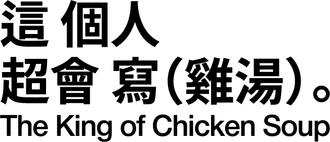

請回答 8 個問題
將對應編號的玻璃瓶子放在紅色的 NFC 裝置以解碼雞湯
翻閱書本以查看雞湯的脈絡，或更多內容
1 / 8
掃描裝置以解讀這句雞湯
將桌上的罐子放在紅色的裝置上，以獲取一句雞湯
以下是你的結果...

掃描對應編號的罐子
請掃描對應編號的瓶子以查看原句
載入中...
心靈雞湯（Chicken Soup for the Soul）名稱最早來自美國，是一個系列書籍名稱。該系列透過簡短、感人、小故事集合，談人生體悟、情感療癒等主題。
這樣的書在中文市場被翻譯、改編、流傳，「心靈雞湯」逐漸被當作一種文體／語境中的通稱，用來指那些溫暖勵志、哲理語錄、小故事療癒文等。
在中文語境裡，「心靈雞湯」這個詞後來被泛化，不僅指書籍，也指網路貼文、社群文字、格言警句、療癒語錄等，變成一種流行文化現象。
文本中常有激勵、鼓舞、希望、正向的調子
較少論理性分析，而訴諸共鳴、情緒、感受
通常為短句、警句、或短篇小故事、斷句明確
傾向給出「你可以」「要堅持」「總會有光」這類語句
有時鼓勵多於實際策略，缺少可操作內容
有些語句過度簡化、理想化現實，忽略複雜性
過度泛濫與機械化，使人麻木
社交媒體時代，各種勵志語錄、雞湯文大量湧現，變成一種「社交媒體式」的快消文字。雞湯文被過度消費、反覆轉貼、套路化，很多人開始對其失去信服感。
雞湯文被用「修辭代替說理」，以情緒包裝理論，缺乏邏輯與實質批判。這讓一些讀者感到「只是好聽的話」而非可以落地的思考。
被稱為「毒雞湯」的文章常以渲染絕望或焦慮吸引眼球，製造情緒刺激。
落差與幻滅感
有些人在閱讀雞湯文時曾得到短暫鼓舞，但面對現實的壓力、挫折、制度限制時，回過頭去發現「雞湯」沒辦法改變大環境，也無法提供真正的支援。
雞湯文靠「激勵」維持，希望讀者藉此感受能量，然而若缺乏方法與持續支援，容易讓人感覺空洞。
倫理與責任問題
某些雞湯文鼓勵「只要努力就能成功」或「所有苦難都是必經過程」等論調，就可能忽視結構性的不平等、個體能力差異、外部阻礙與社會制度因素。這類文句容易被批評為「對弱勢者不公平的話語」或「責怪式勵志」。
有些溫暖語句背後隱含操控或壓迫語氣（例如「你若不努力就是懶惰」之類的語言），使讀者感到被施壓或內耗。若人在脆弱時過度信任這些語句，可能對自我造成傷害。
文化語境變遷
在資訊過載、思想多元、批判意識抬頭的時代，簡單化的勵志語句可能被視為膚淺、矯情或虛假。人們期待更多真實、複雜、帶有脈絡與思考的內容。
雞湯文被視為「慰藉型消費文化」的一部分，即以消費方式獲取短暫慰藉，而非真正的自治與思考。
情緒壓力與焦慮常態化
現代生活節奏快、競爭激烈、社會變動大，使得焦慮、孤獨、挫敗感等情緒非常普遍。
人們在面臨困難、挫折時，渴望被理解、被安慰、被鼓舞。
社群媒體與資訊過載
在社群平台中，人們常被碎片化訊息包圍，需要一些快速、簡潔、情感上的支持。
雞湯文因為短小易讀、容易被轉貼，符合這種需求。
傳統支持系統弱化
過去或許有較強的家庭、社區、宗教、世代傳承的情感支持結構，但在現代社會這些支持結構可能被弱化，許多人不得不透過閱讀、網絡社群尋找安慰與歸屬。
意義尋求與精神空缺
現代社會在物質富足之後，人們的精神／意義需求變得更突出。
即便物質上足夠，也可能在心理、情感、生命意義上感到缺乏。雞湯文正好提供一種「意義感的瞬間補品」。
自我反思與成長的渴望
有些人閱讀雞湯文是為了反思自己、理清思緒、重整信念，尋求內在力量。雖然有時落差，但那個渴望是真實存在的。
一些文字看起來很有道理，也有蠻多人認同，但讀起來有些部分怪怪的。是對雞湯文化的一種反撲 / 批評語言，用來指那些「表面溫暖、實則有害」的語錄或文章。
語句看似勸世、正能量，但若過度信賴可能導致對自我更加苛責或焦慮。
往往強調單一因果或簡化成功公式（如「努力就能成功」、「你必須很努力，才能看起來毫不費力」），忽略情境、運氣、資源不平等等因素。
常有誇大、片面、二元對立的語調（把世界分為「成功者 / 普通人」「努力者 / 失敗者」等）
容易引發內耗、焦慮、比較與自我懷疑 — 當你做不到它說的那樣，你可能會自責。
在網絡文化中，毒雞湯也可能被刻意做成噱頭、反諷版本，以「毒性」和悲觀語調混用，造成娛樂性或諷刺效果。
雞湯是一種說法，但不完全正確，因為它模糊、簡單且正向。它會隨著讀者的人生經歷、社會歷練和思想深度而產生不同的見解。不論是相信／不相信這種說法，都會深化成某種生活態度與思想。